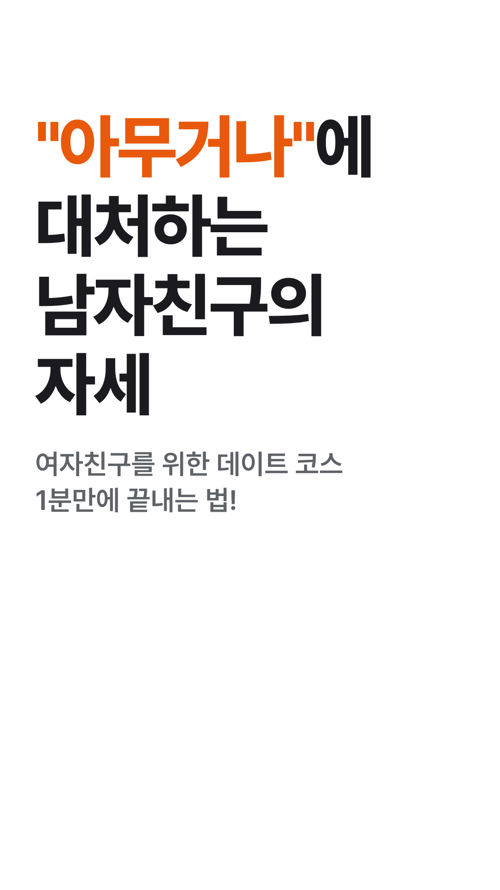
첫 프레임부터 큰 제목 "아무거나"에 대처하는 남자친구의 자세. 이어서 부제가 뜬다.
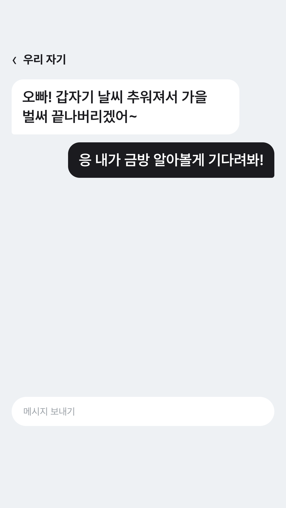
여자친구 말풍선이 뜨고, 1초 뒤 남자친구 답장이 올라온다. 답장 말풍선을 누르면 다음 화면으로 넘어간다.
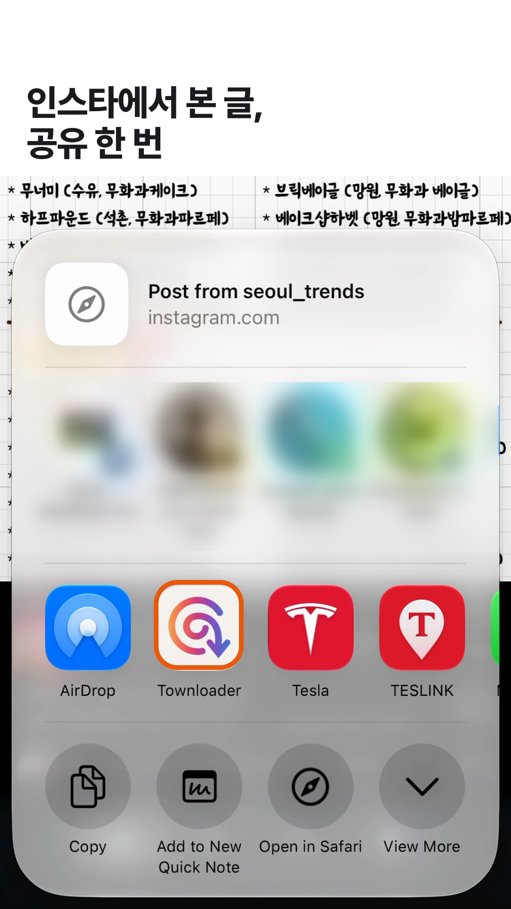
녹화본 1, 5.6~7.5초. 인스타 글에서 공유 시트를 열고 Townloader에 테두리 표시. 연락처 줄만 가림.
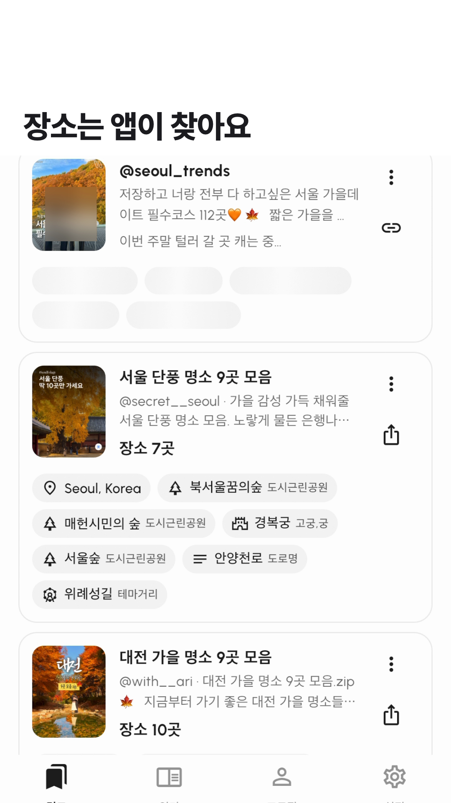
녹화본 1, 46~47.5초. 쉬머와 "이번 주말 털러 갈 곳 캐는 중…" 문구가 그대로 보인다.
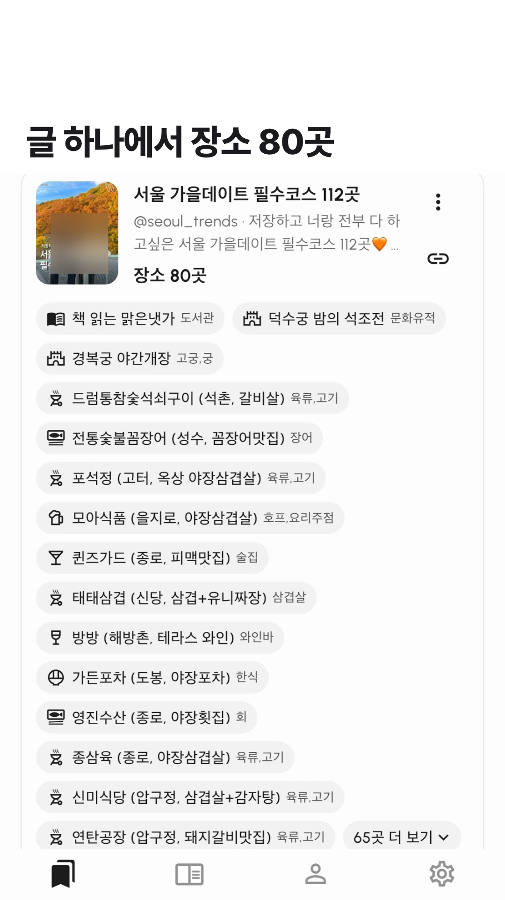
녹화본 1, 약 65초. 칩이 뜬 카드. "장소 80곳" 숫자가 착지한다.
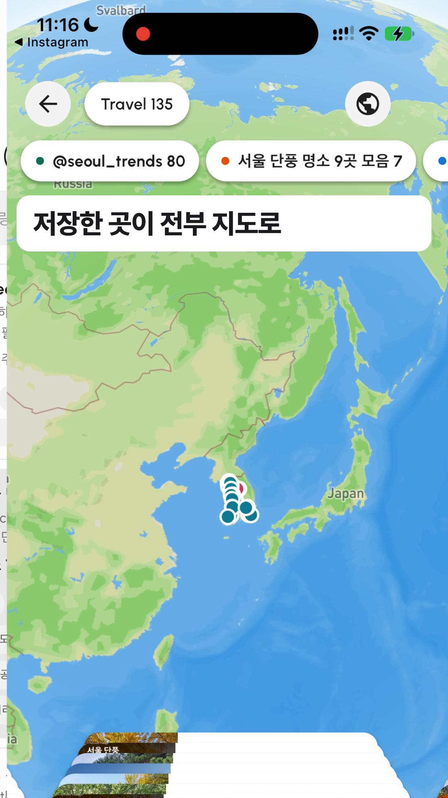
녹화본 1, 47.9~50초. 실제 지구본에서 한국으로 내려간다. 이 영상의 가장 큰 장면.
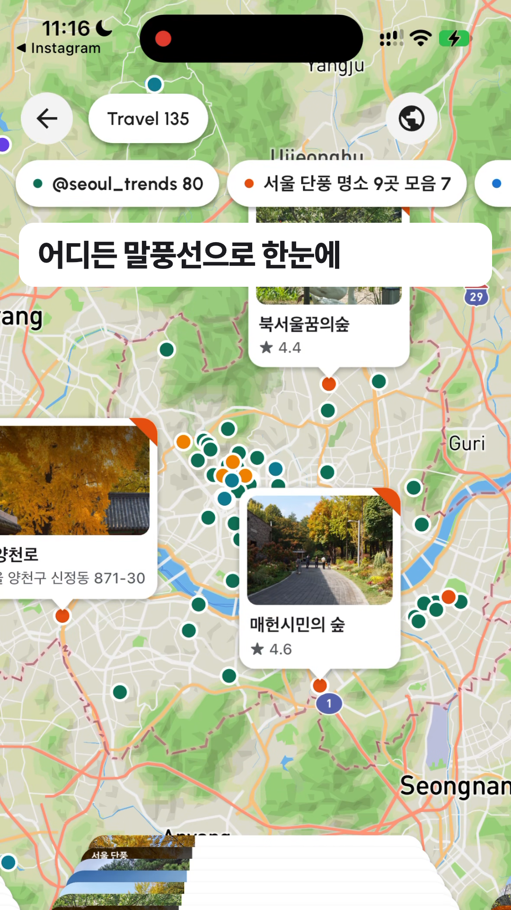
녹화본 1, 49~52초. 말풍선이 펼쳐진 지도를 움직인다.
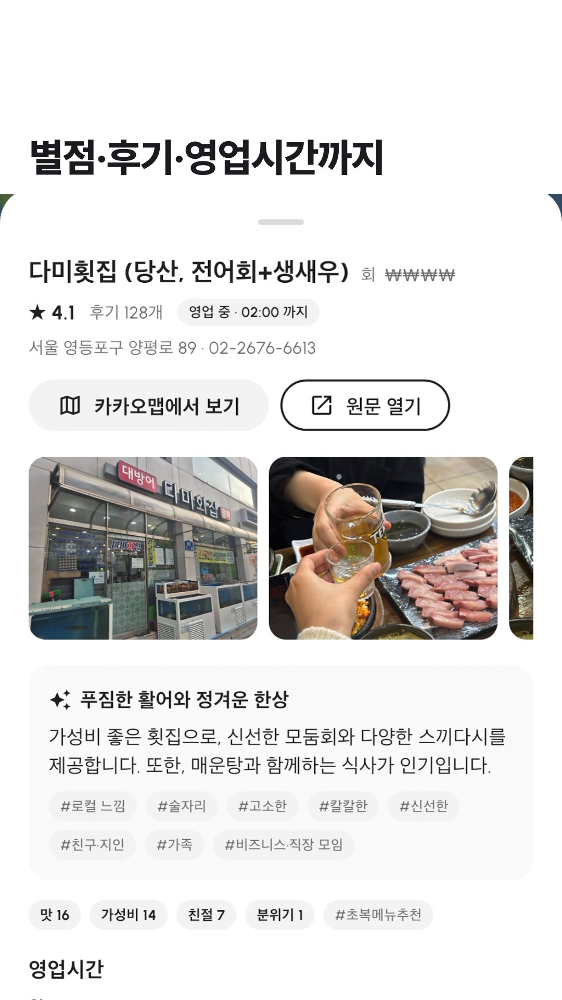
녹화본 1, 60.9~63초. 카드에서 상세 시트가 올라오고 사진이 채워진다.
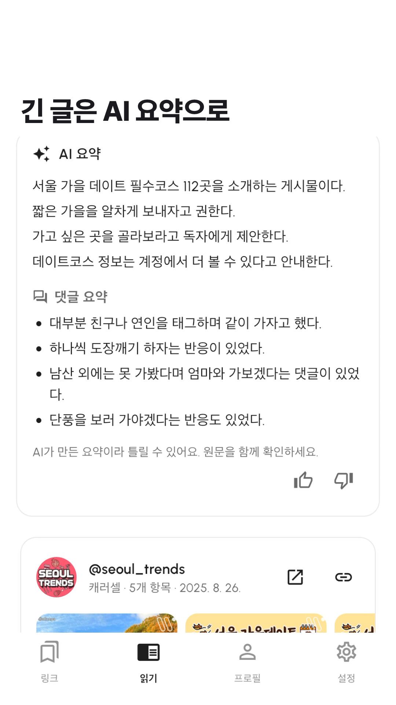
녹화본 2, 16~24초를 빠르게. 쉬머 뒤 요약이 줄마다 나오고 좋아요 버튼까지 보인다.
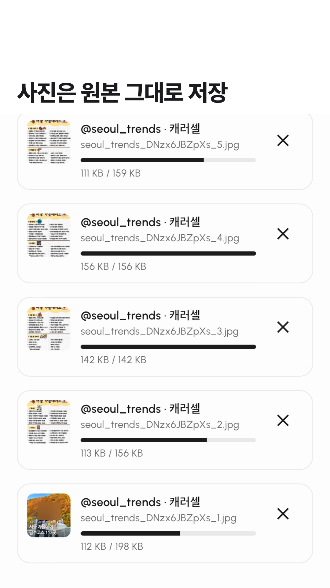
녹화본 3, 6~9초. 다운로드 진행 막대가 차오른다.
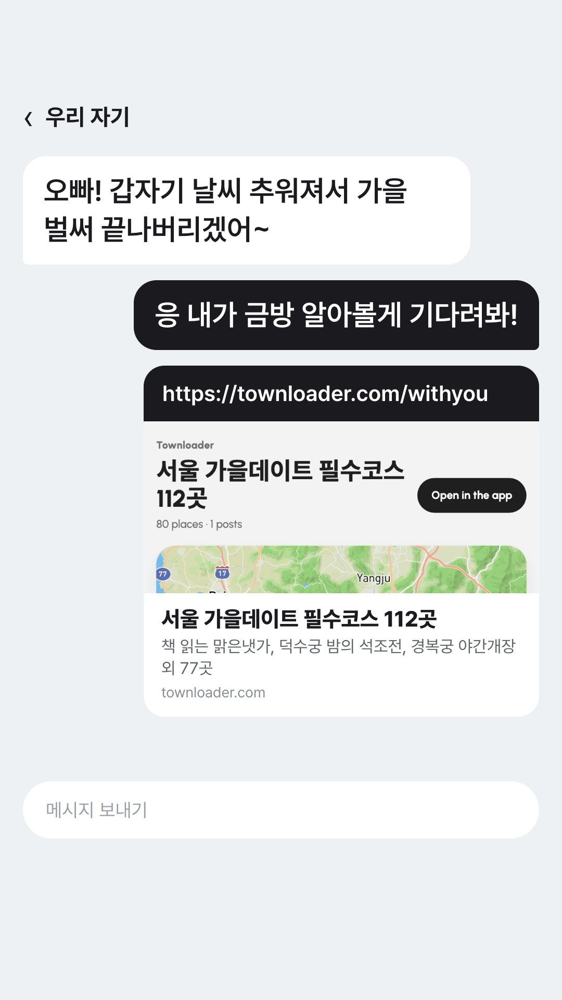
채팅으로 돌아와 링크가 전송되고, 그 아래 미리보기 카드가 뜬다.
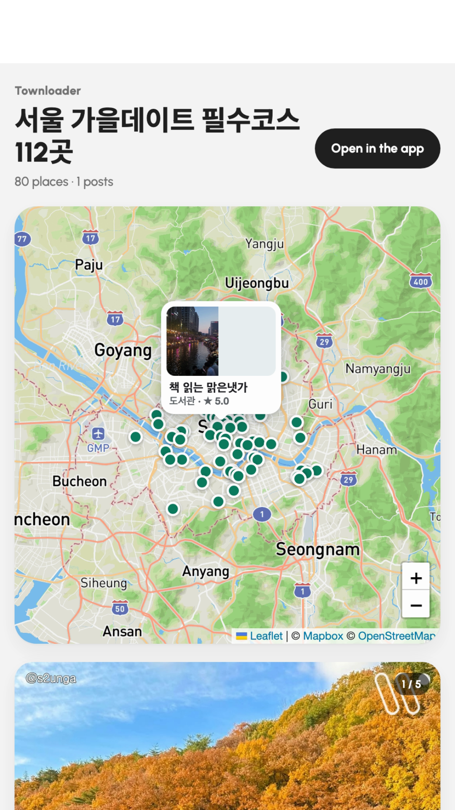
미리보기 카드가 화면 전체로 커지며 실제 공유 페이지를 지도에서 장소 목록까지 스크롤한다.
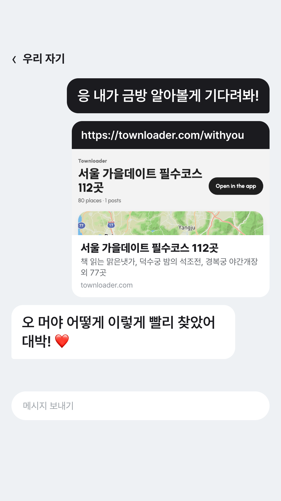
채팅으로 돌아오면 "오 머야 어떻게 이렇게 빨리 찾았어 대박! ❤️"가 올라오고, 하트에서 음악이 터진다.
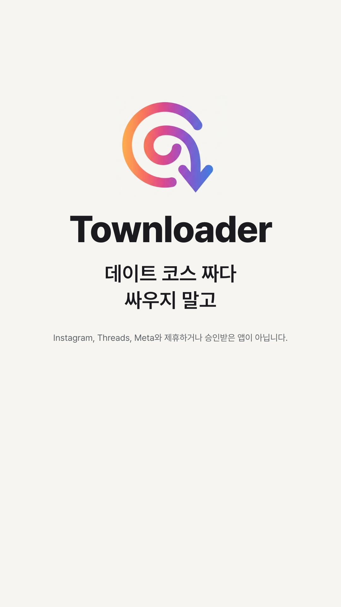
로고가 그려지듯 나오고 앱 이름과 "데이트 코스 짜다 싸우지 말고"가 뜬다. 2초 이상 유지.